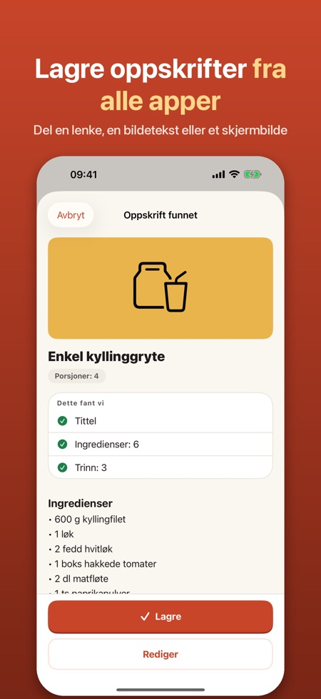
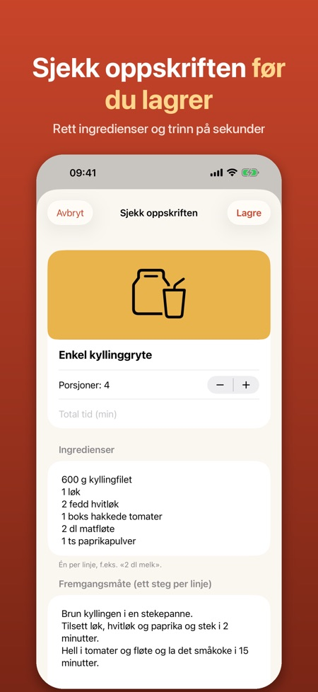
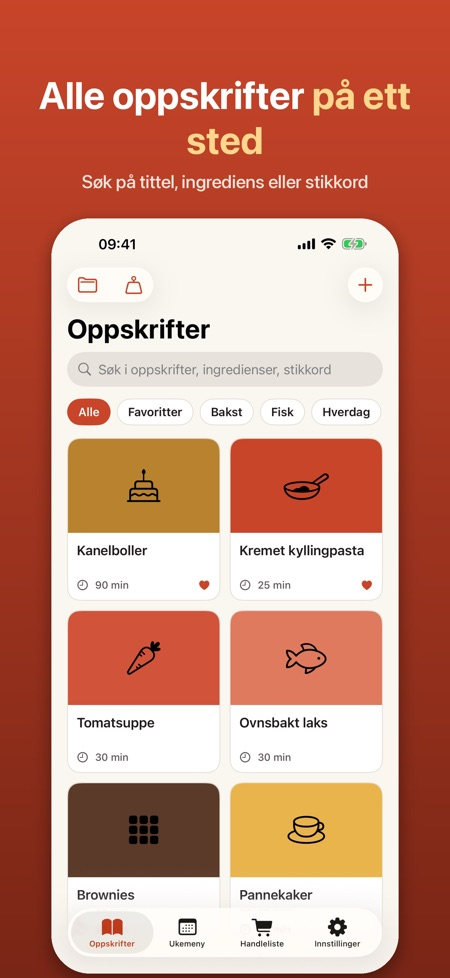

Ukemeny og handleliste. Del en oppskrift fra en app eller nettside og få et ryddig oppskriftskort med ingredienser, steg og tid. Skaler porsjoner, lag mat steg for steg og planlegg uken.



Har du sett en oppskrift i en app eller på en nettside? Del den til appen, så blir den et ryddig oppskriftskort du kan lage mat etter.
SLIK LAGRER DU
• Trykk Del i Safari, Instagram, TikTok eller en annen app, og velg Oppskrifter
• Lenker til oppskriftssider leses automatisk: tittel, ingredienser, steg, tid, porsjoner og bilde
• Fra sosiale medier brukes teksten du deler eller limer inn, eller et skjermbilde (Pro)
• Du ser alltid oppskriften før den lagres, og kan rette alt
LAG MAT
• Kokemodus med stor tekst, ett steg om gangen, og skjermen holdes på
• Tidtakere finnes i teksten («la heve i 1 time») og startes med ett trykk
• Skaler porsjoner opp og ned
• Gjør om cups og ounces til dl og gram, og tbsp/tsp til ss/ts
PLANLEGG OG HANDLE
• Handleliste: velg ingredienser, og like varer slås sammen (2 dl + 1 dl melk = 3 dl)
• Del listen eller eksporter den til Påminnelser
• Ukemeny: dra oppskrifter til dagene og legg hele uken på handlelisten (Pro)
DIN SAMLING
• Søk i titler, ingredienser og stikkord
• Favoritter, stikkord og samlinger (samlinger med Pro)
• Kildelenken lagres, så du alltid ser hvor oppskriften kommer fra
FORSTÅR NORDISKE OPPSKRIFTER
Appen leser oppskrifter på norsk, svensk, dansk, finsk og engelsk og kjenner mål som dl, ss, ts, msk, tsk, spsk, krm, rkl og tl.
PRO
Uten Pro kan du lagre opptil 15 oppskrifter og bruke kokemodus og handleliste. Pro gir ubegrenset antall oppskrifter, lesing av skjermbilder, smart import (på enheter med Apple Intelligence), ukemeny og samlinger. Velg årsabonnement eller engangskjøp. Abonnementet fornyes automatisk med mindre det sies opp senest 24 timer før perioden er slutt, og kan sies opp i Innstillinger under navnet ditt > Abonnementer.
PERSONVERN
Ingen konto og ingen reklame. Oppskriftene dine blir på telefonen. Appen logger aldri inn på sosiale medier og henter bare det du selv deler.
Appen er uavhengig og ikke tilknyttet Instagram, TikTok, Meta eller andre nevnte tjenester. Varemerker tilhører sine eiere.